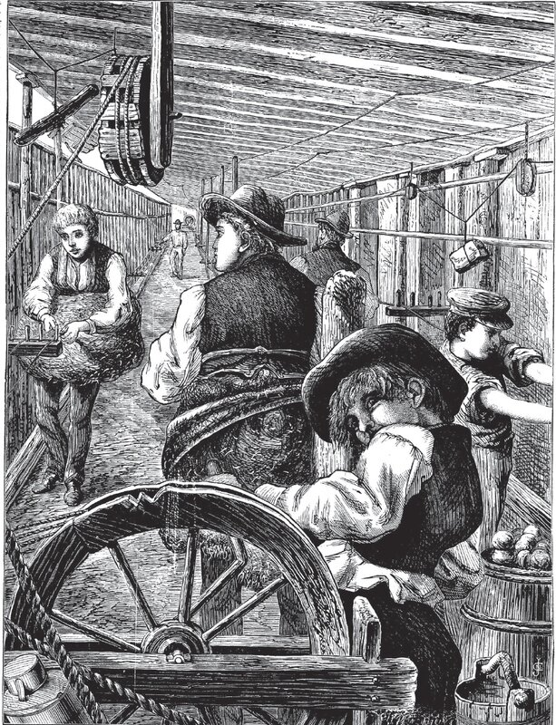
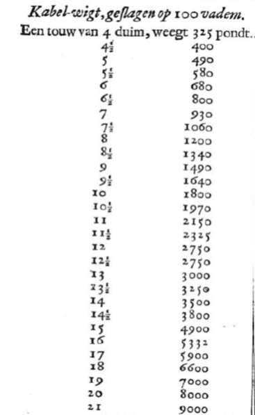
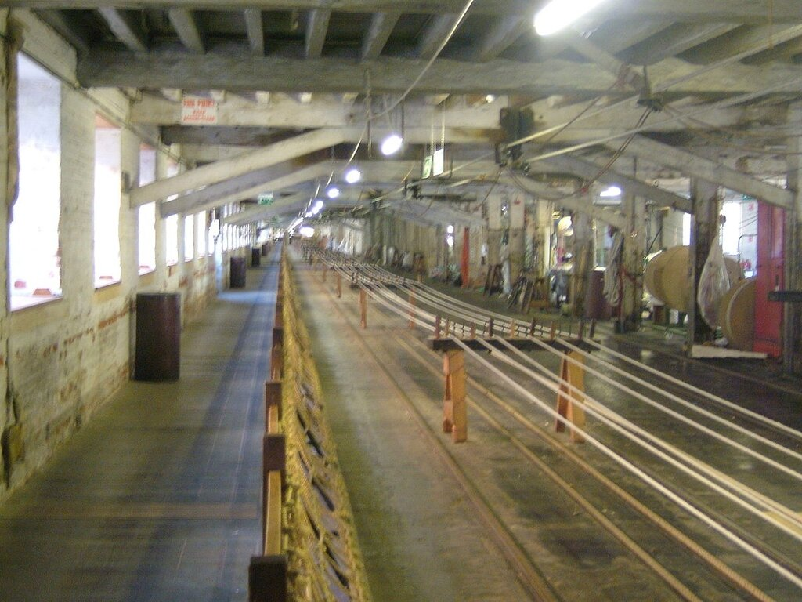
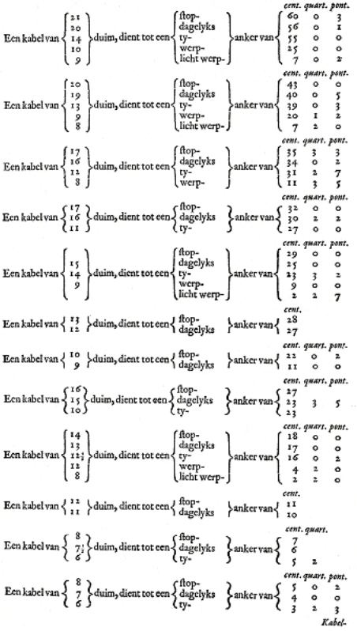

Якорные канаты венецианского кога
В один ненастный день, в тоске нечеловечьей,
Не вынеся тягот, под скрежет якорей,
Мы всходим на корабль ― и происходит встреча
Безмерности мечты с предельностью морей.
М. Цветаева. Плаванье
Согласно записи в трактате Fabrica di galere (правда, достаточно туманной) венецианский ког «длиной 13 пассо и грузоподъемностью 700 ботта» должен иметь «12 якорных канатов». И вот здесь, признаться, я приуныл. Изучение старинных текстов идет всегда с трудом, но как только в них начинают рассуждать о снастях и тросах, наш паровозик надо надолго ставить в тупик. Чтобы там не спеша распутать все эти снасти и понять, о чем идет речь. На этот раз в тупике пришлось оставаться особенно долго.

Канатный цех
Нам уже приходилось разбираться с витыми тросами старинной работы, когда мы говорили о набивке вант фламандской каракки. Тогда мы установили разницу между тросами правого и левого спуска. Сейчас нас ждет другая задача: как определить толщину троса по его описаниям в старинных трактатах. Мы знаем, как эта задача решалась в недалеком прошлом: размер того или иного троса определялся не его диаметром, а длиной его окружности. Но в Fabrica di galere используется другой принцип: размер троса определяется весом одного шага троса, выраженным в фунтах (венецианских).
Вот отрывок из манускрипта:
'… volemo che per zeschaduno centenaro che porta ogni nave vole tortize 2 - cioè de miera - adoncha questa nostra chocha vole tortize 12 e zeschaduna de queste de esser longa passa 80 e de pesar al passo lb.10.
… необходимо, чтобы [в расчете –g._g.] на каждое centenaro (т.е. , miera), которое определяет грузовместимость корабля, было два троса, следовательно, наша кока должна иметь 12 тросов, каждый из которых длиной 80 пассо при весе одного пассо 10 фунтов.
Термин centenaro, по-видимому, означает здесь «сто ботта». Автор затем объясняет, что это равно miera, (это итальянское migliaio, тысяча), надо понимать, тысяче фунтов (венецианских), или 477 кг. Таким образом, наш текст следует трактовать следующим образом: венецианская кока должна иметь по два якорных каната на каждую сотню miera или ботта своей грузовместимости. Давая цифру 12 канатов, венецианский мастер косвенно указывает, что грузовместимость коки была 600 ботта. Но как увязать это с приводимой в другом месте цифрой 700 ботт – непонятно. Оставим эту нестыковку на совести автора, благо грех этот не так уж и велик.
Длина якорного каната, как мы видим, 80 пассо, или 139,2 м. Это стандартная длина венецианского морского каната для того периода, хотя в литературе встречаются сведения и о канатах длиной 85, 90 и даже 100 пассо.
Теперь о толщине якорных канатов. Корабельный мастер пишет, что один пассо такого троса имел вес 10 фунтов. Переведем эти цифры в метрические единицы: 1 пассо = 5 венецианских футов = 34,8х5 = 174 см. 1 фунт = 477 г. Таким образом, решая несложную пропорцию, находим, что один погонный метр якорного каната весил 2,74 кг. Теперь попытаемся определить диаметр этой снасти. Для этого обратимся к труду столь любезного историкам России Николаса Витсена, а точнее, к его книге Aaloude en hedendaagsche scheeps-bouw en bestier. Architectura navalis et regimen nauticum, вышедшей в Амстердаме в 1671 году. Именно в этой книге мы найдем таблицу для соответствия веса троса его толщине. Вот фрагмент этой таблицы

Ясно, что толщина троса в этой таблице – это длина его окружности в дюймах. Вес отнесен к 100 vadem и выражен в фунтах. Встает совсем маленький вопрос: в каких vadem (фатомах), дюймах и фунтах мы должны производить расчет. Ведь в ту пору что ни страна, то своя система единиц. И амстердамский фунт или фатом – совсем не тот, что скажем фунт или фатом в Англии.
Национальность автора, место выхода книги, ее язык, наконец, не должны, казалось бы, оставлять нам никаких сомнений: здесь все голландское, все амстердамское. Но не один уже раз мы удерживали себя от поспешных выводов. Не будем спешить и на этот раз. А посмотрим другие трактаты той эпохи, в которых также приводятся сведения о размерах и весе корабельных снастей. Например, известный труд Корнелиса Ван Эйка (Cornelis Van Yk, De nederlandsche scheepsbouwkunst open gestelt), вышедший в 1697 году. Те же цифры, тот же язык. Так значит и меры голландские? Не спешим. Обращаемся к более ранним трудам корабельных мастеров. И вот тут нас ждет открытие. В трактате англичанина Эдварда Хэйворда (Edward Hayward, The Sizes and Lengths of Rigging for All the States Ships and frigats), который относится к 1655 году, т.е. опубликован на шестнадцать лет раньше Н.Витсена, мы встретим очень похожие таблицы. В компетенции автора нам сомневаться не приходится: он работал на английской верфи в Чатеме, где находились знаменитые цеха по производству корабельных тросов. Их строения и по сей день привлекают внимание туристов, так как это было самое длинное здание из кирпича в Европе того времени.

Канатный цех Чатемской верфи, фото Clem Rutter, Rochester via Wikimedia Commons
Вот таблица веса снастей из работы Хэйворда
The Weight of Cordage.
Inches. C qrs l
Cables of 21 90 0 0
Cables of 20 80 0 0
Cables of 19 70 0 0
Cables of 18 66 0 0
Cables of 17 59 0 12
Cables of 16 53 2 7
Cables of 15 46 0 7
Cables of 14½ 43 3 7
Cables of 14 40 2 0
Cables of 13 34 0 11
Cables of 12 29 2 0
Cables of 11 25 2 7
Cables of 10½ 24 2 0
Cables of 10 20 3 4
Cables of 9 17 3 13
Cables of 8 13 3 7
Cablets of 7½ 10 3 0
Cablets of 7 9 3 22
Cablets of 6½ 8 1 16
Cablets of 6 7 1 0
Cablets of 5½ 6 3 5
Cablets of 5 5 3 12
Cablets of 4½ 4 2 9
Cablets of 4 3 3 0
Cablets of 3½ 3 1 0
Cablets of 3 2 3 0
Hausers of 8 16 1 6
Hausers of 7½ 13 0 7
Hausers of 7 11 1 21
Hausers of 6½ 9 3 7
Hausers of 6 9 0 14
Hausers of 5½ 7 1 24
Hausers of 5 6 1 7
Hausers of 4½ 5 0 16
Hausers of 4 4 2 21
Coils of 3½ 2 2 21
Coils of 3 2 1 14
Coils of 2½ 1 2 21
Coils of 2 1 0 21
Coils of 1½ 0 2 21
Coils of 1 0 1 21
А вот такая же таблица из трактата Витсена
Казалось бы, все ясно: в английском трактате меры английские, а в голландском – голландские. Но всего лишь через несколько страниц у Витсена в его голланском трактате помещена таблица толщины якорных канатов для якорей различного веса.

Нас настораживает, что в голландском трактате для веса якоря (последний столбец) используются типично английские единицы измерения: хандредвейт (hundredweight, английский центнер), квартер (quarter, четверть) и английский фунт (pound). Наше недоумение еще больше возрастет, когда мы установим, что в работе Хэйворда подобая таблица практически один в один схожа с таблицей у Витсена (не буду загромождать пост, поверьте на слово). А учитывая даты выхода трактатов, в плагиате уличить можно Витсена. Но если он некритически перенес английские таблицы в свою работу, может и единицы веса нам надо брать по тогдашним английским стандартам?
Думаю, так поступать не стоит. Все же значительная часть справочного материала у Витсена имеет голландское происхождение. Единственно, категоричность того или иного утверждения надо брать под сомнение.
После всего сказанного вернемся к нашей задаче: какова была толщина якорных канатов на венецианском коге? Мы установили, что вес одного погонного метра каната был 2, 74 кг. Совсем несложные вычисления и данные из таблицы Витсена позволяют нам установить, что этот вес соответствует тросу с длиной окружности 8 дюймов, т.е. диаметром 6,5 см.
Я понимаю, что это все скучновато и вряд ли представляет интерес «для широкого круга читателей». Да и продвижение по теме замедляется: велики языковые трудности. Но пропустить это нельзя, по крайней мере самому автору, иначе в знании предмета появится пробел, который рано или поздно скажется на качестве всего рассказа. Так что терпите.
Продолжение последует.